The git parable¶
Note
This is a minimally edited version of the git parable by Tom Preston-Werner, with his kind permission. Please contact Tom Preston-Werner for permission to copy this version or the original.
The only changes from the original are:
- the addition of a short section on cryptographic hashes (copyright Matthew Brett, released to the public domain);
- I have added many of Johan Herland’s nice illustrations from https://github.com/jherland/git_parable – the illustrations are his copyright, released under CC-by-NC-SA.;
- some one-line linking text between Johan’s illustrations of the git staging area.
19 May 2009 - San Francisco
Git is a simple, but extremely powerful system. Most people try to teach Git by demonstrating a few dozen commands and then yelling “tadaaaaa.” I believe this method is flawed. Such a treatment may leave you with the ability to use Git to perform simple tasks, but the Git commands will still feel like magical incantations. Doing anything out of the ordinary will be terrifying. Until you understand the concepts upon which Git is built, you’ll feel like a stranger in a foreign land.
The following parable will take you on a journey through the creation of a Git-like system from the ground up. Understanding the concepts presented here will be the most valuable thing you can do to prepare yourself to harness the full power of Git. The concepts themselves are quite simple, but allow for an amazing wealth of functionality to spring into existence. Read this parable all the way through and you should have very little trouble mastering the various Git commands and wielding the awesome power that Git makes available to you.
The Parable¶
Imagine that you have a computer that has nothing on it but a text editor and a few file system commands. Now imagine that you have decided to write a large software program on this system. Because you’re a responsible software developer, you decide that you need to invent some sort of method for keeping track of versions of your software so that you can retrieve code that you previously changed or deleted. What follows is a story about how you might design one such version control system (VCS) and the reasoning behind those design choices.
Snapshots¶
Alfred is a friend of yours that works down at the mall as a photographer in one of those “Special Moments” photo boutiques. All day long he takes photos of little kids posing awkwardly in front of jungle or ocean backdrops. During one of your frequent lunches at the pretzel stand, Alfred tells you a story about a woman named Hazel who brings her daughter in for a portrait every year on the same day. “She brings the photos from all the past years with her,” Alfred tells you. “She likes to remember what her daughter was like at each different stage, as if the snapshots really let her move back and forth in time to those saved memories.”
Like some sort of formulaic plot device, Alfred’s innocent statement acts as a catalyst for you to see the ideal solution to your version control dilemma. Snapshots, like save points in a video game, are really what you care about when you need to interact with a VCS. What if you could take snapshots of your codebase at any time and resurrect that code on demand? Alfred reads the dawning realization spreading across your face and knows you’re about to leave him without another word to go back and implement whatever genius idea he just caused you to have. You do not disappoint him.
You start your project in a directory named working:
As you code, you try to write one feature at a time. When you complete a self-contained portion of a feature, you make sure that all your files are saved and then make a copy of the entire working directory, giving it the name snapshot-0. After you perform this copy operation, you make sure to never again change the code files in the new directory. After the next chunk of work, you perform another copy, only this time the new directory gets the name snapshot-1, and so on.

To make it easy to remember what changes you made in each snapshot, you add a special file named message to each snapshot directory that contains a summary of the work that you did and the date of completion. By printing the contents of each message, it becomes easy to find a specific change that you made in the past, in case you need to resurrect some old code.
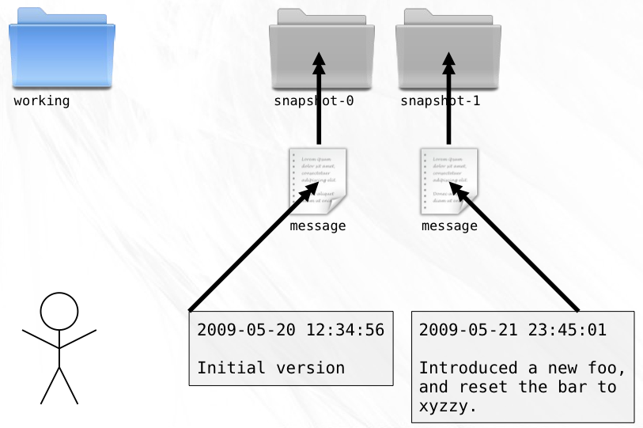Branches¶
After a bit of time on the project, a candidate for release begins to emerge. Late nights at the keyboard finally yield snapshot-99, the nascent form of what will become Release Version 1.0. It comes to pass that this snapshot is packaged and distributed to the eagerly awaiting masses.

Stoked by excellent response to your software, you push forward, determined to make the next version an even bigger success.
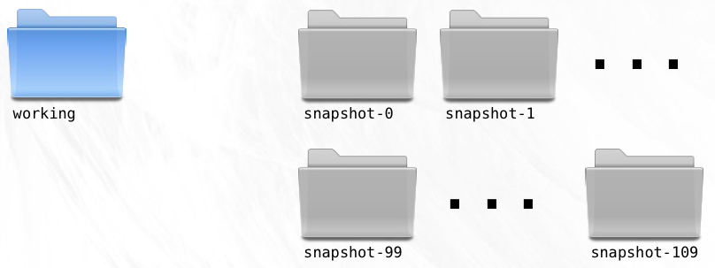Your VCS has so far been a faithful companion. Old versions of your code are there when you need them and can be accessed with ease. But not long after the release, bug reports start to come in.
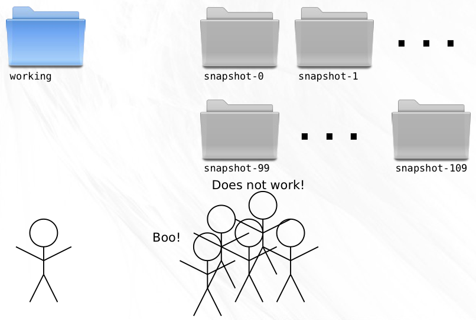Nobody’s perfect, you reassure yourself, and snapshot-99 is readily retrievable, glad to be brought back to life for the purposes of applying bug fixes.
Since the release, you’ve created 10 new snapshots. This new work must not be included in the 1.0.1 bug fix version you now need to create. To solve this, you copy snapshot-99 to working so that your working directory is at exactly the point where Version 1.0 was released.

A few swift lines of code and the bug is fixed in the working directory.
It is here that a problem becomes apparent. The VCS deals very well with linear development, but for the first time ever, you need to create a new snapshot that is not a direct descendent of the preceding snapshot. If you create a snapshot-110 (remember that you created 10 snapshots since the release), then you’ll be interrupting the linear flow and will have no way of determining the ancestry of any given snapshot.

Clearly, you need something more powerful than a linear system.
Studies show that even short exposures to nature can help recharge the mind’s creative potential. You’ve been sitting behind the artificially polarized light of your monitor for days on end. A walk through the woods in the brisk Autumn air will do you some good and with any luck, will help you arrive at an ideal solution to your problem.
The great oaks that line the trail have always appealed to you. They seem to stand stark and proud against the perfectly blue sky. Half the ruddy leaves have departed from their branches, leaving an intricate pattern of branches in their wake. Fixating on one of the thousands of branch tips you idly try to follow it back to the solitary trunk. This organically produced structure allows for such great complexity, but the rules for finding your way back to the trunk are so simple, and perfect for keeping track of multiple lines of development! It turns out that what they say about nature and creativity are true.
By looking at your code history as a tree, solving the problem of ancestry becomes trivial.
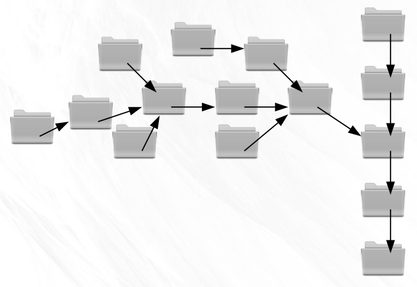All you need to do is include the name of the parent snapshot in the message file you write for each snapshot. Adding just a single upstream pointer will enable you to easily and accurately trace the history of any given snapshot all the way back to the root.
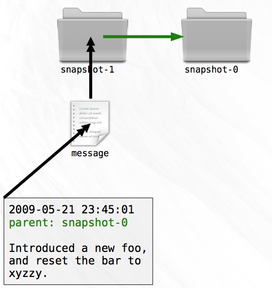Branch Names¶
Your code history is now a tree. Instead of having a single latest snapshot, you have two: one for each branch. With a linear system, your sequential numbering system let you easily identify the latest snapshot. Now, that ability is lost.
Creating new development branches has become so simple that you’ll want to take advantage of it all the time. You’ll be creating branches for fixes to old releases, for experiments that may not pan out; indeed it becomes possible to create a new branch for every feature you begin!
But like everything good in life, there is a price to be paid. Each time you create a new snapshot, you must remember that the new snapshot becomes the latest on its branch. Without this information, switching to a new branch would become a laborious process indeed.
Every time you create a new branch you probably give it a name in your head. “This will be the Version 1.0 Maintenance Branch,” you might say. Perhaps you refer to the former linear branch as the “master” branch.
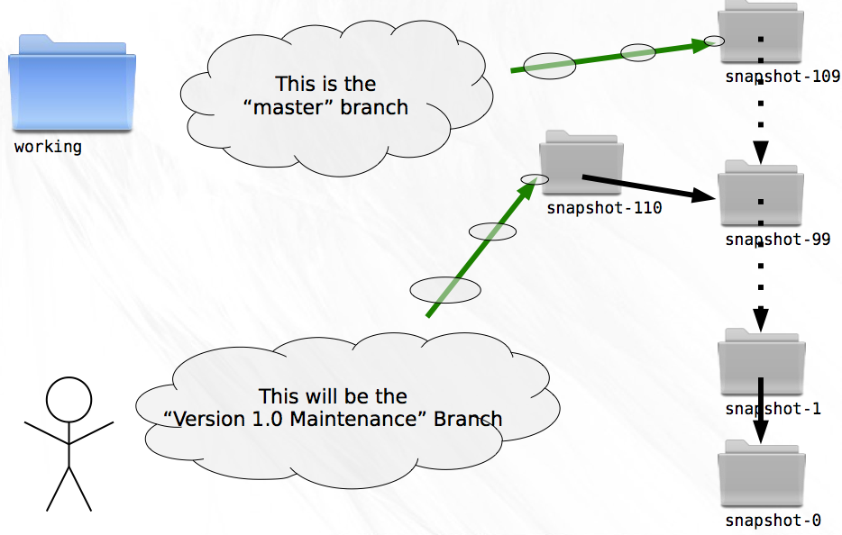Think about this a little further, though. From the perspective of a tree, what does it mean to name a branch? Naming every snapshot that appears in the history of a branch would do the trick, but requires the storage of a potentially large amount of data. Additionally, it still wouldn’t help you efficiently locate the latest snapshot on a branch.
The least amount of information necessary to identify a branch is the location of the latest snapshot on that branch. If you need to know the list of snapshots that are part of the branch you can easily trace the parentage.
Storing the branch names is trivial. In a file named branches, stored outside of any specific snapshot, you simply list the name/snapshot pairs that represent the tips of branches. To switch to a named branch you need only look up the snapshot for the corresponding name from this file.
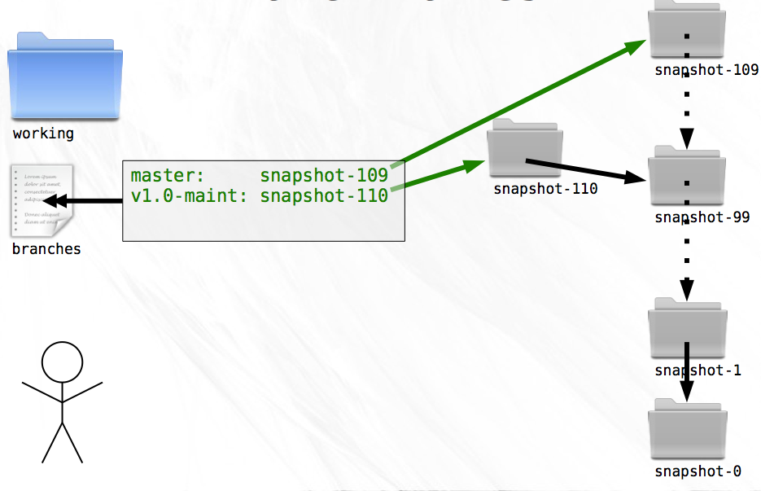Because you’re only storing the latest snapshot on each branch, creating a new snapshot now contains an additional step. If the new snapshot is being created as part of a branch, the branches file must be updated so that the name of the branch becomes associated with the new snapshot. A small price to pay for the benefit.
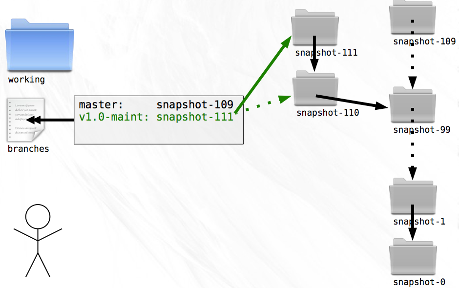Tags¶
After using branches for a while you notice that they can serve two purposes. First, they can act as movable pointers to snapshots so that you can keep track of the branch tips. Second, they can be pointed at a single snapshot and never move.
The first use case allows you to keep track of ongoing development, things like “Release Maintenance”. The second case is useful for labeling points of interest, like “Version 1.0” and “Version 1.0.1”.
Mixing both of these uses into a single file feels messy. Both types are pointers to snapshots, but one moves and one doesn’t. For the sake of clarity and elegance, you decide to create another file called tags to contain pointers of the second type.

Keeping these two inherently different pointers in separate files will help you from accidentally treating a branch as a tag or vice versa.
A short diversion on hashes¶
Note
This section is not part of the original git parable
You don’t realize it, but you are soon going to need some good unique identifiers to use for your snapshots. Luckily you know about hashes.
For background on hashes : Wikipedia on hash functions.
A hash is the result of running a hash function over a block of data. The hash is a fixed length string that is the fingerprint of that exact block of data. For example, let’s say you had a text file called my_file with exactly this text as its contents: return):
git is a rude word in UK English
(The sentence has a carriage return at the end). You can run the SHA1 hash function over the contents of this file (e.g. with the shasum command in Unix), and you will get this hash value: 30ad6c360a692c1fe66335bb00d00e0528346be5.
Not too exciting so far. However, the rather magical nature of this string is not yet apparent. Here’s the trick – there is no practical way for you to find a file with different contents to my_file that will give the same hash value.
The hash value then is (very nearly) completely unique to the sequence of bytes in that file.
For example, a tiny change in the file makes the hash completely different. If you just add a full-stop at the end of the sentence:
git is a rude word in UK English.
– and save the file, it now has a completely different hash value, 23d97b00299c250b43049be67c97cf2e5ffc2428.
So, I give you a file, and you calculate the hash value, and it comes out as 30ad6c360a692c1fe66335bb00d00e0528346be5 then you can be very sure that the data I gave you was exactly a file with the text “git is a rude word in UK English” (plus a carriage return).
Distributed¶
Working on your own gets pretty lonely. Wouldn’t it be nice if you could invite a friend to work on your project with you? Well, you’re in luck. Your friend Zoe has a computer setup just like yours and wants to help with the project. Because you’ve created such a great version control system, you tell her all about it and send her a copy of all your snapshots, branches, and tags so she can enjoy the same benefits of the code history.
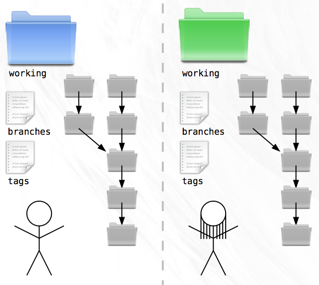It’s great to have Zoe on the team but she has a habit of taking long trips to far away places without internet access. As soon as she has the source code, she catches a flight to Patagonia and you don’t hear from her for a week. In the meantime you both code up a storm. When she finally gets back, you discover a critical flaw in your VCS. Because you’ve both been using the same numbering system, you each have directories named ‘snapshot-114’, ‘snapshot-115’, and so on, but with different contents!
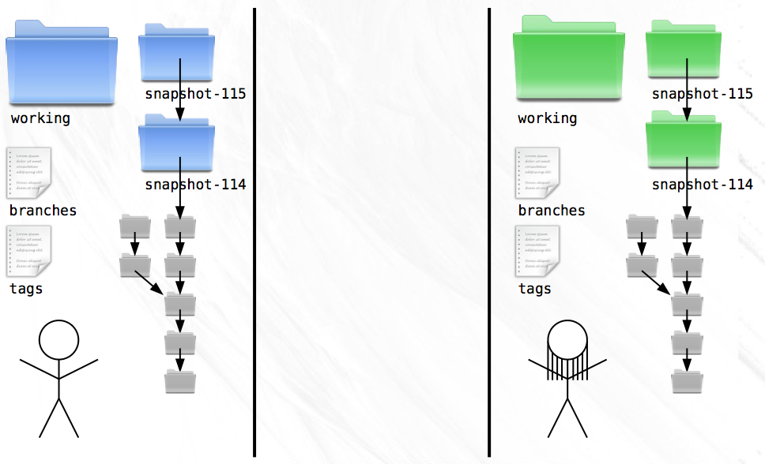To make matters worse, you don’t even know who authored the changes in those new snapshots. Together, you devise a plan for dealing with these problems. First, snapshot messages will henceforth contain author name and email.
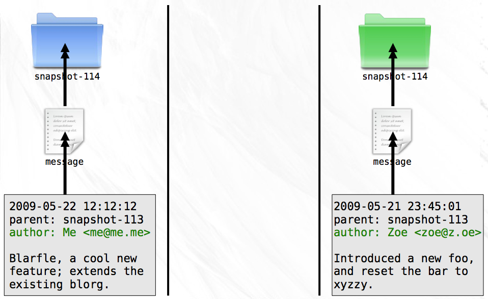Second, snapshots will no longer be named with simple numbers. Instead, you’ll use the contents of the message file to produce a hash. This hash will be guaranteed to be unique to the snapshot since no two messages will ever have the same date, message, parent, and author. To make sure everything goes smoothly, you both agree to use the SHA1 hash algorithm that takes the contents of a file and produces a 40 character hexadecimal string. You both update your histories with the new technique and instead of clashing ‘snapshot-114’ directories, you now have distinct directories named ‘8ba3441b6b89cad23387ee875f2ae55069291f4b’ and ‘db9ecb5b5a6294a8733503ab57577db96ff2249e’.
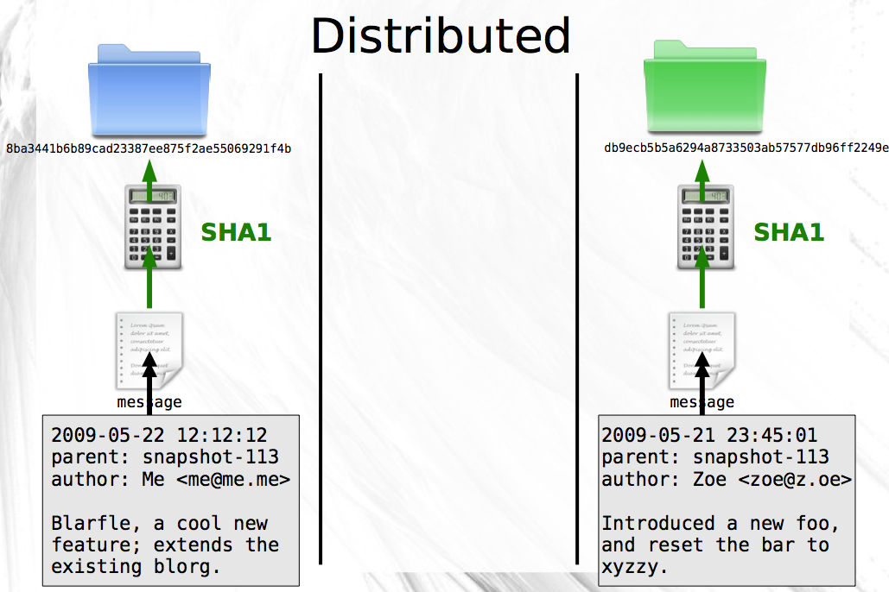With the updated naming scheme, it becomes trivial for you to fetch all the new snapshots from Zoe’s computer and place them next to your existing snapshots. Because every snapshot specifies its parent, and identical messages (and therefor identical snapshots) have identical names no matter where they are created, the history of the codebase can still be drawn as a tree. Only now, the tree is comprised of snapshots authored by both Zoe and you.

This point is important enough to warrant repeating. A snapshot is identified by a SHA1 that uniquely identifies it (and its parent). These snapshots can be created and moved around between computers without losing their identity or where they belong in the history tree of a project. What’s more, snapshots can be shared or kept private as you see fit. If you have some experimental snapshots that you want to keep to yourself, you can do so quite easily. Just don’t make them available to Zoe!
Offline¶
Zoe’s travel habits cause her to spend countless hours on airplanes and boats. Most of the places she visits have no readily available internet access. At the end of the day, she spends more time offline than online.
It’s no surprise, then, that Zoe raves about your VCS. All of the day to day operations that she needs to do can be done locally. The only time she needs a network connection is when she’s ready to share her snapshots with you.
Merges¶
Before Zoe left on her trip, you had asked her to start working off of the branch named ‘math’ and to implement a function that generated prime numbers. Meanwhile, you were also developing off of the ‘math’ branch, only you were writing a function to generate magic numbers.
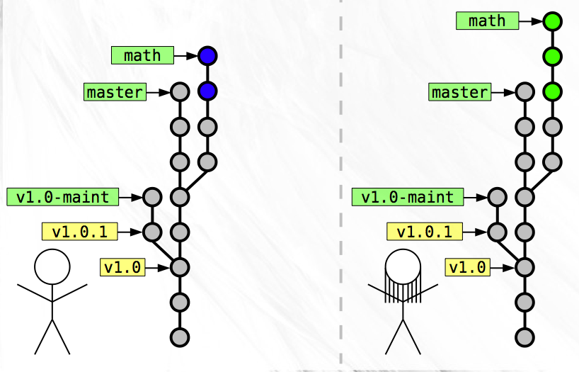Now that Zoe has returned, you are faced with the task of merging these two separate branches of development into a single snapshot.
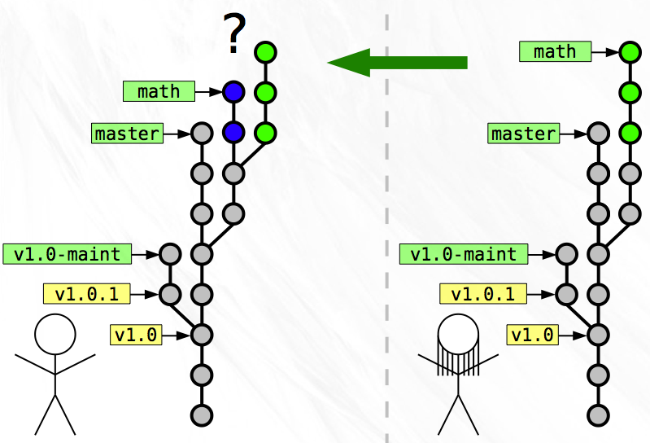Since you both worked on separate tasks, the merge is simple. While constructing the snapshot message for the merge, you realize that this snapshot is special. Instead of just a single parent, this merge snapshot has two parents! The first parent is your latest on the ‘math’ branch and the second parent is Zoe’s latest on her ‘math’ branch. The merge snapshot doesn’t contain any changes beyond those necessary to merge the two disparate parents into a single codebase.
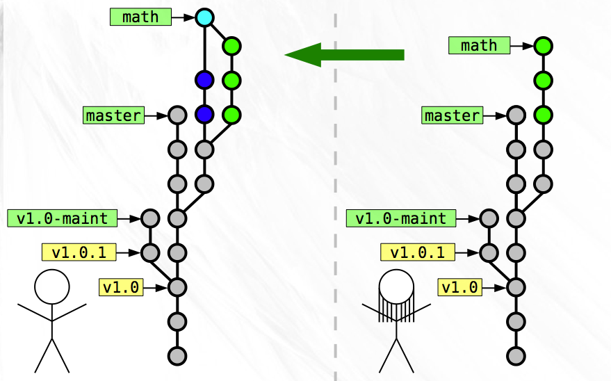Once you complete the merge, Zoe fetches all the snapshots that you have that she does not, which include your development on the ‘math’ branch and your merge snapshot. Once she does this, both of your histories match exactly!

Rewriting History¶
Like many software developers you have a compulsion to keep your code clean and very well organized. This carries over into a desire to keep your code history well groomed. Last night you came home after having a few too many pints of Guinness at the local brewpub and started coding, producing a handful of snapshots along the way. This morning, a review of the code you wrote last night makes you cringe a little bit. The code is good overall, but you made a lot of mistakes early on that you corrected in later snapshots.
Let’s say the branch on which you did your drunken development is called drunk and you made three snapshots after you got home from the bar. If the name drunk points at the latest snapshot on that branch, then you can use a useful notation to refer to the parent of that snapshot. The notation drunk^ means the parent of the snapshot pointed to by the branch name drunk. Similarly drunk^^ means the grandparent of the drunk snapshot. So the three snapshots in chronological order are drunk^^, drunk^, and drunk.
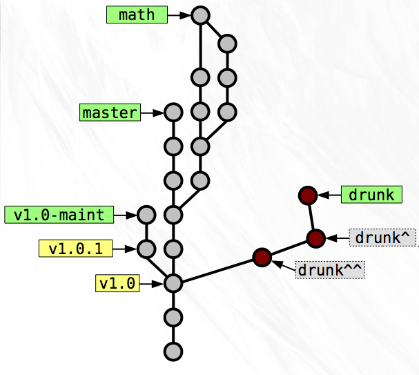You’d really like those three lousy snapshots to be two clean snapshots. One that changes an existing function, and one that adds a new file. To accomplish this revision of history you copy drunk to ‘working’ and delete the file that is new in the series. Now ‘working’ represents the correct modifications to the existing function. You create a new snapshot from ‘working’ and write the message to be appropriate to the changes. For the parent you specify the SHA1 of the drunk^^^ snapshot, essentially creating a new branch off of the same snapshot as last night.

Now you can copy drunk to ‘working’ and roll a snapshot with the new file addition. As the parent you specify that snapshot you created just before this one.
As the last step, you change the branch name drunk to point to the last snapshot you just made.
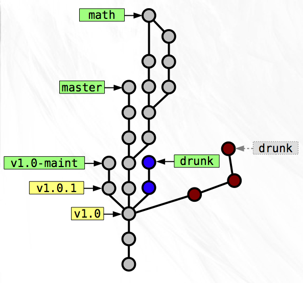The history of the ‘drunk’ branch now represents a nicer version of what you did last night. The other snapshots that you’ve replaced are no longer needed so you can delete them or just leave them around for posterity. No branch names are currently pointing at them so it will be hard to find them later on, but if you don’t delete them, they’ll stick around.
Staging Area¶
As much as you try to keep your new modifications related to a single feature or logical chunk, you sometimes get sidetracked and start hacking on something totally unrelated. Only half-way into this do you realize that your working directory now contains what should really be separated as two discrete snapshots.

To help you with this annoying situation, the concept of a staging directory is useful. This area acts as an intermediate step between your working directory and a final snapshot. Each time you finish a snapshot, you also copy that to a staging directory.
Copy first change to staging area:
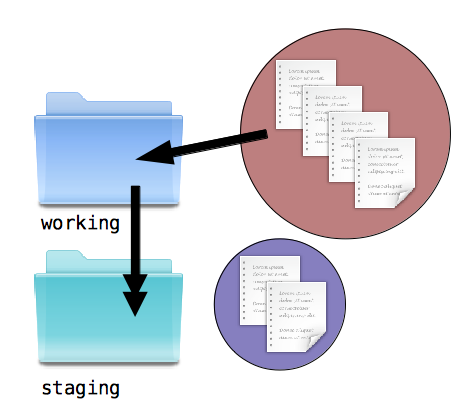Copy staging area to first new snapshot:

Copy second change to staging area:
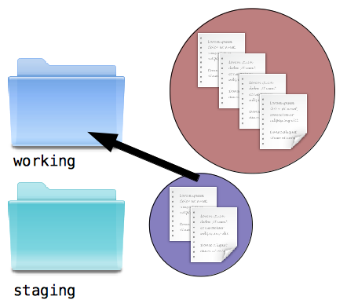Copy staging area to second new snapshot:

Now, every time you finish an edit to a new file, create a new file, or remove a file, you can decide whether that change should be part of your next snapshot. If it belongs, you mimic the change inside staging. If it doesn’t, you can leave it in working and make it part of a later snapshot. From now on, snapshots are created directly from the staging directory.
This separation of coding and preparing the stage makes it easy to specify what is and is not included in the next snapshot. You no longer have to worry too much about making an accidental, unrelated change in your working directory.
You have to be a bit careful, though. Consider a file named README. You make an edit to this file and then mimic that in staging. You go on about your business, editing other files. After a bit, you make another change to README. Now you have made two changes to that file, but only one is in the staging area! Were you to create a snapshot now, your second change would be absent.
The lesson is this: every new edit must be added to the staging area if it is to be part of the next snapshot.
Diffs¶
With a working directory, a staging area, and loads of snapshots laying around, it starts to get confusing as to what the specific code changes are between these directories. A snapshot message only gives you a summary of what changed, not exactly what lines were changed between two files.
Using a diffing algorithm, you can implement a small program that shows you the differences in two codebases. As you develop and copy things from your working directory to the staging area, you’ll want to easily see what is different between the two, so that you can determine what else needs to be staged. It’s also important to see how the staging area is different from the last snapshot, since these changes are what will become part of the next snapshot you produce.
There are many other diffs you might want to see. The differences between a specific snapshot and its parent would show you the “changeset” that was introduced by that snapshot. The diff between two branches would be helpful for making sure your development doesn’t wander too far away from the mainline.
Eliminating Duplication¶
After a few more trips to Namibia, Istanbul, and Galapagos, Zoe starts to complain that her hard drive is filling up with hundreds of nearly identical copies of the software. You too have been feeling like all the file duplication is wasteful. After a bit of thinking, you come up with something very clever.
You remember that the SHA1 hash produces a short string that is unique for a given file contents. Starting with the very first snapshot in the project history, you start a conversion process. First, you create a directory named objects outside of the code history. Next, you find the most deeply nested directory in the snapshot. Additionally, you open up a temporary file for writing. For each file in this directory you perform three steps. Step 1: Calculate the SHA1 of the contents. Step 2: Add an entry into the temp file that contains the word ‘blob’ (binary large object), the SHA1 from the first step, and the filename. Step 3: Copy the file to the objects directory and rename it to the SHA1 from step 1. Once finished with all the files, find the SHA1 of the temp file contents and use that to name the temp file, also placing it in the objects directory.
If at any time the objects directory already contains a file with a given name, then you have already stored that file’s contents and there is no need to do so again.
Now, move up one directory and start over. Only this time, when you get to the entry for the directory that you just processed, enter the word ‘tree’, the SHA1 of the temp file from last time, and the directory’s name into the new temp file. In this fashion you can build up a tree of directory object files that contain the SHA1s and names of the files and directory objects that they contain.
Once this has been accomplished for every directory and file in the snapshot, you have a single root directory object file and its corresponding SHA1. Since nothing contains the root directory, you must record the root tree’s SHA1 somewhere. An ideal place to store it is in the snapshot message file. This way, the uniqueness of the SHA1 of the message also depends on the entire contents of the snapshot, and you can guarantee with absolute certainty that two identical snapshot message SHA1s contain the same files!
It’s also convenient to create an object from the snapshot message in the same way that you do for blobs and trees. Since you’re maintaining a list of branch and tag names that point to message SHA1s you don’t have to worry about losing track of which snapshots are important to you.
With all of this information stored in the objects directory, you can safely delete the snapshot directory that you used as the source of this operation. If you want to reconstitute the snapshot at a later date it’s simply a matter of following the SHA1 of the root tree stored in the message file and extracting each tree and blob into their corresponding directory and file.
For a single snapshot, this transformation process doesn’t get you much. You’ve basically just converted one filesystem into another and created a lot of work in the process. The real benefits of this system arise from reuse of trees and blobs across snapshots. Imagine two sequential snapshots in which only a single file in the root directory has changed. If the snapshots both contain 10 directories and 100 files, the transformation process will create 10 trees and 100 blobs from the first snapshot but only one new blob and one new tree from the second snapshot!
By converting every snapshot directory in the old system to object files in the new system, you can drastically reduce the number of files that are stored on disk. Now, instead of storing perhaps 50 identical copies of a rarely changed file, you only need to keep one.
Compressing Blobs¶
Eliminating blob and tree duplication significantly reduces the total storage size of your project history, but that’s not the only thing you can do to save space. Source code is just text. Text can be very efficiently compressed using something like the LZW or DEFLATE compression algorithms. If you compress every blob before computing its SHA1 and saving it to disk you can reduce the total storage size of the project history by another very admirable quantity.
The True Git¶
The VCS you have constructed is now a reasonable facsimile of Git. The main difference is that Git gives you very nice command lines tools to handle such things as creating new snapshots and switching to old ones (Git uses the term “commit” instead of “snapshot”), tracing history, keeping branch tips up-to-date, fetching changes from other people, merging and diffing branches, and hundreds of other common (and not-so-common tasks).
As you continue to learn Git, keep this parable in mind. Git is really very simple underneath, and it is this simplicity that makes it so flexible and powerful. One last thing before you run off to learn all the Git commands: remember that it is almost impossible to lose work that has been committed. Even when you delete a branch, all that’s really happened is that the pointer to that commit has been removed. All of the snapshots are still in the objects directory, you just need to dig up the commit SHA. In these cases, look up git reflog. It contains a history of what each branch pointed to and in times of crisis, it will save the day.
Here are some resources that you should follow as your next step. Now, go, and become a Git master!